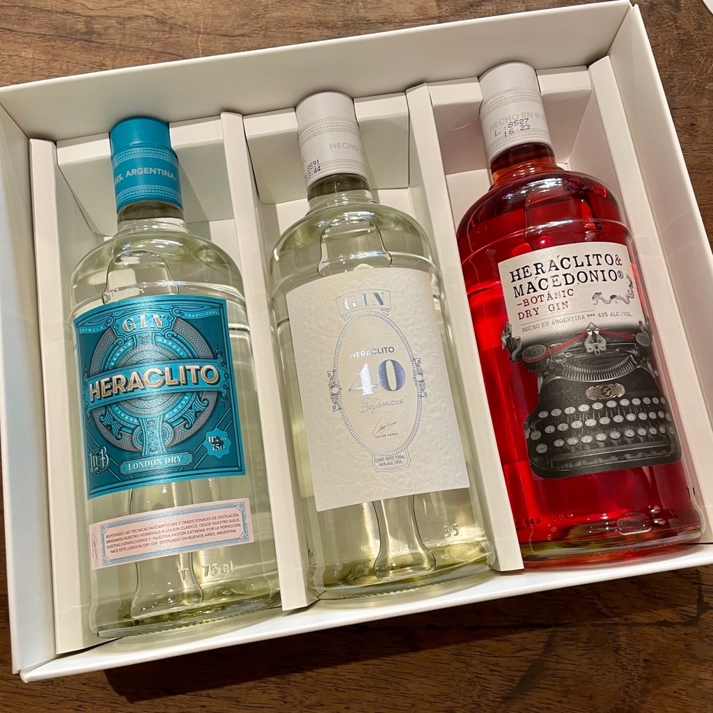

El vermut Lunfa se realiza con uvas de Salta, y con
una receta que es fiel a la costumbre europea. Por
definición, el vermut es italiano, Lunfa respeta su
estructura: 75% de vino; alcohol; caramelo, para darle
color, no dulzor; azúcar, y las mejores hierbas. Tiene alrededor
de veinticinco botánicos, especias, flores: vainilla,
manzanilla, anís, boldo, regaliz, alcaucil y varios cítricos.
LUNFA ROSSO $920-.
LUNFA ROSE $920-.
LUNFA BITTER ROJO $920-.

HERACLITOS
Heraclito es un gin de corte tradicional sujeto a reglamentaciones especificas.
Aromaticamente brinda una salida firme de enebro y coriandro que se combina con
notas cítricas provenientes de componentes como el limón, la lima y la naranja Curazao.
En boca es atrerciopelado, con buen volumen y surgen algunas
notas complejas donde se destacan la menta y el romero.